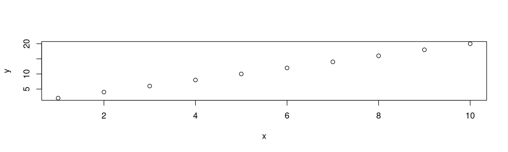

에이전틱AI / gglite
다중척도 워크샵 2026
2026-01-10
에이전틱 코딩이란?

Figure: 바이브코딩과 에이전틱 코딩의 차이점 [1]
제가 이해한 에이전틱 코딩
- 사건: 제 연구실에 있던 정수기에서 물이 샜습니다.
에이전틱 코딩의 활용
예제1 – 관심있는 연구논문 정리
Simplicity (단순성) - Line

입력자료 (DataFrame)

입력자료 (Vector)

Simplicity (단순성) - Boxplot


Simplicity (단순성) - Barplot


Compatibility (호환성)
입력자료

입력자료

입력자료
Convenience (편의성) - 행렬 (wideform) 입력 허용

입력자료
set.seed(42)
y_matrix = cbind(
series1 = cumsum(rnorm(100)),
series2 = cumsum(rnorm(100))
)
# 😩😩😩 Wide → Long 변환 필요
df_long = data.frame(
x = rep(1:100, 2),
y = c(y_matrix[,1], y_matrix[,2]),
label = rep(c("series1", "series2"), each = 100)
)
print(df_long[c(1:2, 101:102), ]) x y label
1 1 1.3709584 series1
2 2 0.8062603 series1
101 1 1.2009654 series2
102 2 2.2457165 series2
입력자료
[[ 0.49671415 -1.41537074]
[ 0.35844985 -1.83601606]
[ 1.00613839 -2.17873058]]
입력자료
series1 series2
0 0.496714 -1.415371
1 0.358450 -1.836016
2 1.006138 -2.178731
Convenience (편의성) - 행렬 (wideform) 입력 허용 (boxplot)

입력자료
set.seed(42)
y_matrix = cbind(
A = rnorm(50, mean=10),
B = rnorm(50, mean=15),
C = rnorm(50, mean=12)
)
# 😩😩😩 Long-form 변환 필요
df_long = data.frame(
group = rep(c("A", "B", "C"), each = 50),
value = c(y_matrix[,1], y_matrix[,2], y_matrix[,3])
)
print(df_long[c(1:2, 51:52, 101:102), ]) group value
1 A 11.370958
2 A 9.435302
51 B 15.321925
52 B 14.216161
101 C 13.200965
102 C 13.044751
입력자료
[[10.49671415 15.32408397 10.58462926]
[ 9.8617357 14.61491772 11.57935468]
[10.64768854 14.323078 11.65728548]]
입력자료
A B C
0 10.496714 15.324084 10.584629
1 9.861736 14.614918 11.579355
2 10.647689 14.323078 11.657285
Convenience (편의성) - Matplotlib 스타일 라벨링
입력자료
[0.49671415 0.35844985 1.00613839]
[-1.41537074 -1.83601606 -2.17873058]
입력자료
입력자료
set.seed(42)
series1 = cumsum(rnorm(100))
series2 = cumsum(rnorm(100))
# 😩😩😩
df_long = data.frame(
x = rep(1:100, 2),
y = c(series1, series2),
group = rep(c("Series 1", "Series 2"), each = 100)
)
print(df_long[c(1:2, 101:102), ]) x y group
1 1 1.3709584 Series 1
2 2 0.8062603 Series 1
101 1 1.2009654 Series 2
102 2 2.2457165 Series 2
Convenience (편의성) - Matplotlib 스타일 라벨링 (회귀분석)

입력자료

Convenience (편의성) - 객체지향적 시각화
입력자료
t1 = seq(0, 0.5, length.out=500)
y1 = sin(2*pi*30*t1)
t2 = seq(0.5, 1, length.out=500)
y2 = sin(2*pi*60*t2)
print(t1[1:5]);print(t2[1:5]);print(y1[1:5]);print(y2[1:5])[1] 0.000000000 0.001002004 0.002004008 0.003006012 0.004008016[1] 0.500000 0.501002 0.502004 0.503006 0.504008[1] 0.0000000 0.1877524 0.3688269 0.5367833 0.6856478[1] -2.155874e-14 3.688269e-01 6.856478e-01 9.057897e-01 9.982119e-01
입력자료
t1 = seq(0, 0.5, length.out=500)
y1 = sin(2*pi*30*t1)
t2 = seq(0.5, 1, length.out=500)
y2 = sin(2*pi*60*t2)
d1 = data.frame(x=t1, y=y1)
d2 = data.frame(x=t2, y=y2)
print(d1[1:2,]);print(d2[1:2,]) x y
1 0.000000000 0.0000000
2 0.001002004 0.1877524 x y
1 0.500000 -2.155874e-14
2 0.501002 3.688269e-01
- 서브플랏은
patchwork사용